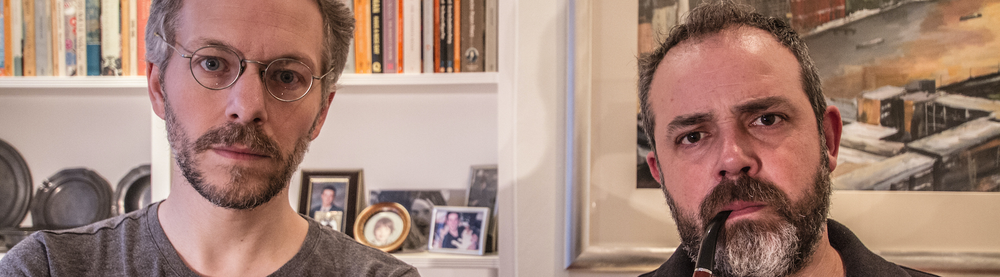

Latest Episode
EPISODE 13
2020 Apocalypse
2020 is the last year ever. Happy new year! Find out how and when we
will
all die in this episode of the Mind
Canyon
podcast. Starring: Ruth Bratt, Naomi Petersen & Lola-Rose Maxwell
About

Mind Canyon is a mockumentary podcast starring the best UK improvisers. Nominated for Best
Comedy
and the
Creativity
Award at the British Podcast Awards 2020. Join hosts Steve Dawson (Mitchell & Webb, The Peter
Serafinowicz
Show)
and
Charlie Kemp (Man Down, Emmerdale) as they fill your Mind Canyon™. This ‘Radiolab’ style podcast
explores
stories
such as “Finding The World Hide and Seek Champion”, “The Most Haunted Londis” and “When Space
Pranks
Go
Wrong”.
The
show is improvised then edited and soundscaped for your listening pleasure.
Episodes
Where Are The Butlers (The Pioneers)

Have you ever seen a butler? No you f***ing haven't. So what happened?
Improv team The Pioneers (https://www.facebook.com/ThePioneersImprov/) join Charlie and Steve as
they search for the truth. Check out more from our guests: Kirsty Cooke
(https://www.instagram.com/kizcakes/) & Robert Frimston (https://twitter.com/RFrimston)
Mind Ditch: Resolutions

A Mind Ditch is a little Mind Canyon. Charlie and Steve talk to 'real
people' about their new year's resolutions. Sure. It's February. You're right. It is very
timely.
2020 Apocalypse (Ruth Bratt, Naomi Petersen, Lola-Rose Maxwell)

2020 is the last year ever. Happy new year! Find out how and when we will
all die in this episode of the Mind Canyon podcast. Starring: Ruth Bratt (https://www.curtisbrown.co.uk/client/ruth-bratt),
Naomi Petersen(https://naomipetersen.co.uk/) &
Lola-Rose Maxwell(http://johndoemgt.com/actresses/301).
News
Nominated For Two British Podcast Awards
Quill is a free, open source WYSIWYG editor built for the modern web. With its modular architecture and expressive API, it is completely customizable to fit any need.